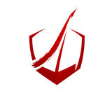

<nav class="navbar navbar-expand-lg" [class.nav-hidden]="!isVisible">
  <a routerLink="/" class="navbar-brand d-flex align-items-center">
    
    Zakary Grand Maison
  </a>

  <button
    class="navbar-toggler"
    type="button"
    data-bs-toggle="collapse"
    data-bs-target="#toggleMobileMenu"
    aria-controls="toggleMobileMenu"
    aria-expanded="false"
    aria-label="Toggle navigation">
    <span class="navbar-toggler-icon"></span>
  </button>

  <div class="collapse navbar-collapse" id="toggleMobileMenu">
    <ul class="navbar-nav ms-auto text-end">
      <li><a routerLink="/" class="nav-link" routerLinkActive="active" [routerLinkActiveOptions]="{exact: true}">{{'nav.homeLink' | translate}}</a></li>
      <li><a routerLink="/projects" class="nav-link" routerLinkActive="active">{{'nav.projectsLink' | translate}}</a></li>
      <li><a routerLink="/research" class="nav-link" routerLinkActive="active">{{'nav.researchLink' | translate}}</a></li>
      <li><a href="https://github.com/zakgm2" class="nav-link" target="_blank">GitHub</a></li>
      <li><a routerLink="/contact" class="nav-link" routerLinkActive="active">Contact</a></li>
      <li id="langToggleListItem" class="d-flex align-items-center">
        <div class="langToggle">
          @for (lang of translate.getLangs(); track lang; let last = $last) {
            <span class="langOption" [class.active]="lang == currentLang" (click)="setLanguage(lang)">{{lang.toUpperCase()}}</span>
            @if (!last) {
              <span class="langDivider">/</span>
            }
          }
        </div>
      </li>
    </ul>
  </div>
</nav>
